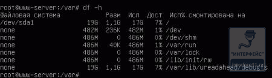
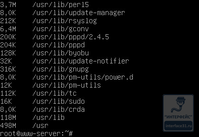
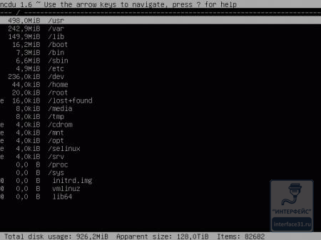
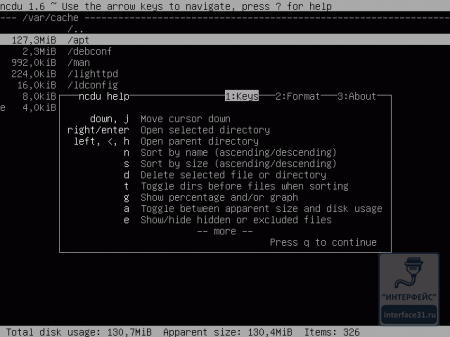
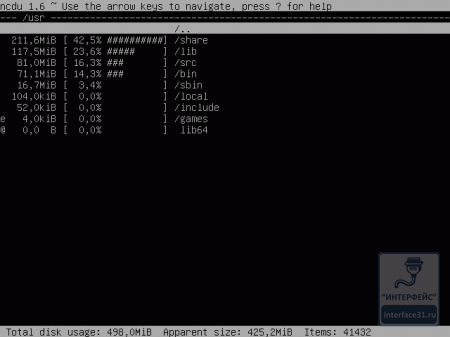

Ubuntu Server. Как узнать свободное место на диске?
Сколько осталось свободного места? Кто его занял? С этими двумя вопросами сталкиваться приходится постоянно, особенно администраторам файловых серверов. Если на платформе Windows, в графическом окружении выяснить это не составляет особого труда, то консоль серверных версий Linux способна многих привести в замешательство. Однако не стоит пугаться, получить интересующую информацию в среде Linux тоже довольно просто.
Как показала практика, данный вопрос актуален не только для начинающих администраторов. Действительно, недостаточно просто узнать размер файла или папки, а нужно быстро и эффективно выяснить кто именно занял место на диске и чем. Но обо всем по порядку.
Начнем с простого вопроса, как посмотреть сколько свободного места осталось. Для этой цели есть команда
df -h
которая выводит список всех файловых систем, их размер и точки монтирования. Ключ -h позволяет вывести информацию в удобном для восприятия виде - в мегабайтах и гигабайтах, без ключа информация о размере выводится в блоках.

На первый вопрос мы ответили, но, как правило, этот ответ порождает еще больше вопросов. Из полученной информации абсолютно не ясно чем именно заполнен диск. Это могут быть как важные данные, так и фотографии с последнего корпоратива, "заботливо" продублированные пользователями по своим сетевым папкам. В первом случае надо думать об увеличении объема дисковой подсистемы, а во втором можно смело чистить диск и проводить разъяснительные беседы.
Чтобы ответить на второй вопрос нам нужно знать размеры отдельных папок и файлов. В Linux системах это можно сделать командой du с указанием интересующей папки, также можно указать ключ -h для получения удобных для восприятия результатов.
Несмотря на то, что эта команда работает, практической пользы от нее нет. Почему? Сейчас поясним, ниже приведена часть вывода команды:
du -h /usr

Да, мы узнали что папка /usr имеет размер 498 Мб, но представления о том, что именно занимает основное место в этой папке мы не получили. Цельной картины о заполнении дискового пространства как не было, так и нет.
Но не стоит отчаиваться, на помощь нам придет небольшая утилита ncdu, в стандартной установке ее нет, но она без проблем устанавливается из репозитория:
apt-get install ncdu
Запущенная без параметров утилита выводит информацию о текущей папке, но так как нас интересует вся файловая система, то в качестве параметра укажем корневую директорию:
ncdu /
После непродолжительных вычислений утилита выведет иерархический список директорий, начиная с самого большого размера:

Ну это совсем другое дело. Сразу видно чем именно занято дисковое пространство. Утилита интерактивна, мы можем перемещаться по дереву, входить в папки, изменять представление информации, удалять ненужные файлы и директории. Все возможности программы можно узнать вызвав встроенную справку:

Как видим, утилита проста, но весьма богата возможностями, например можно быстро включить более наглядное представление данных:

Теперь вопрос чем занято дисковое пространство и что с этим делать решается буквально в считанные минуты. На наш взгляд данная утилита должна быть в арсенале каждого системного администратора.
И в заключение мы подготовили небольшой сюрприз: небольшой видеодоклад, который, надеемся, поможет вам лучше понять материал данной статьи.